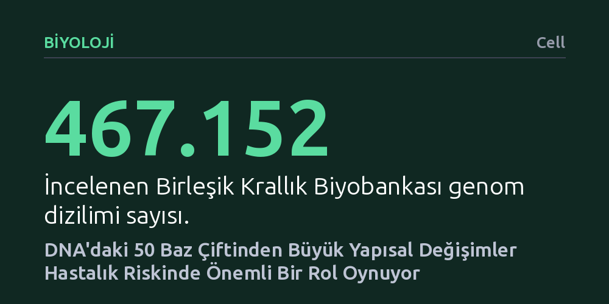

BIYOLOJI · Cell · 2026-10-18
Yaklaşık yarım milyon insanın genomunu inceleyen araştırmacılar, DNA'daki 50 baz çiftinden büyük yapısal varyantların hastalık riskinde şimdiye kadar göz ardı edilmiş önemli bir payı olduğunu saptadı. Bu kapsamlı harita, nadir ve düzenleyici genetik değişimleri açığa çıkararak yeni ilaçların geliştirilmesine zemin hazırlıyor.
Hastalık risklerinin yalnızca tek harflik DNA mutasyonlarından değil, genomdaki 50 baz çiftini aşan büyük yapısal blok değişimlerinden de kaynaklandığını göstererek genetik temelli tedavilerin ufkunu genişletiyor.

İnsan sağlığını tehdit eden pek çok rahatsızlığın kökeninde genetik etkenlerin yattığı uzun süredir biliniyor. Ancak bugüne kadar yapılan araştırmaların büyük kısmı, DNA dizilimindeki tek harflik küçük yazım hatalarına odaklanmıştı. Oysa genetik yapımızda çok daha büyük, gözden kaçması kolay devasa değişimler de bulunuyor.
Bu noktada temel soru şuydu: DNA zincirinde meydana gelen onlarca harflik büyük yapısal kopmalar, eklemeler veya yer değişimleri insan hastalıklarında ne kadar belirleyici bir rol oynuyor? Bilim insanları, bu büyük yapısal varyantların hastalık risklerindeki gerçek payını ortaya çıkarmayı hedefledi.
Araştırma ekibi bu soruyu yanıtlamak için Birleşik Krallık Biyobankası (UK Biobank) veri tabanından yararlandı. Proje kapsamında tam 467.152 bireyin genom dizilimi titizlikle analiz edildi. Bu denli geniş bir örneklem boyutu, insan genetiği alanında şimdiye kadar yürütülen en kapsamlı veri analizlerinden birini oluşturdu.
Bilim insanları çalışmada özellikle 50 baz çiftinden daha büyük olan yapısal varyantlara odaklandılar. Milyonlarca genetik harf taranarak, DNA üzerindeki bu büyük ölçekli değişimlerin katılımcıların sağlık kayıtlarındaki hastalıklarla ve fiziksel özellikleriyle nasıl örtüştüğü incelendi.
Elde edilen bulgular, 50 baz çiftini aşan bu yapısal değişimlerin insan hastalık riskinde şimdiye kadar yeterince fark edilmemiş önemli bir paya sahip olduğunu gösterdi. Çalışma, özellikle nadir görülen ve genlerin çalışmasını kontrol eden düzenleyici bölgelerdeki yapısal varyantların çeşitli hastalıklarla doğrudan ilişkili olduğunu kanıtladı.
Ortaya çıkan kapsamlı kaynak, genetik bilimi açısından önemli bir boşluğu doldurdu. Makalede belirtildiği gibi, bu çalışma "yapısal varyantların insan hastalık riskinin önemli ve daha önce yeterince tanınmamış bir kaynağı olduğunu" net bir şekilde ortaya koydu.
Bu bulgular, insan biyolojisinin işleyiş mekanizmalarını daha derinlemesine kavramamıza yardımcı oluyor. Hastalıkların genetik temellerini sadece tekil harf mutasyonlarıyla sınırlı görmeyip büyük yapısal parçaları da hesaba katmak, teşhis ve risk analizlerinin doğruluğunu artırabilir.
Ayrıca keşfedilen bu yeni hedefler, ilaç geliştirme süreçlerinin hızlandırılmasına somut bir zemin sunuyor. Hangi genetik varyantın hangi hücresel mekanizmayı bozduğu anlaşıldıkça, doğrudan bu hedeflere yönelik daha etkili tedavi molekülleri tasarlamak mümkün hale gelecektir.